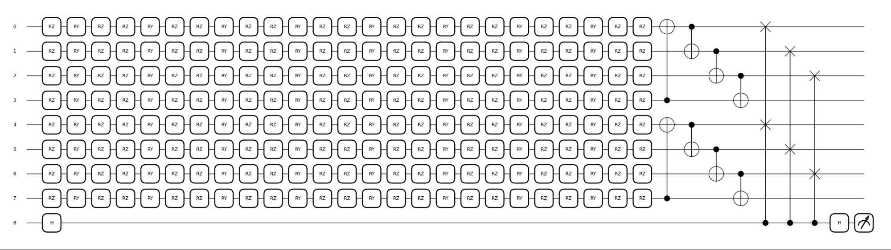
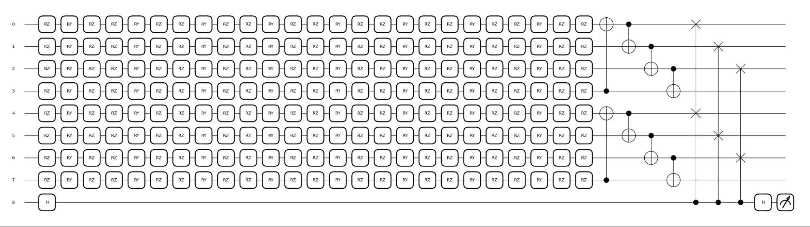

In this post, I would like to share the progress of my GSoC24 project Quantum Contrastive Representation Learning for High Energy Physics in ML4Sci organization. Google Summer of Code (GSoC) aims to introduce open source development by providing opportunities for new contributors to work with an open source organization on a project. My GSoC experience with ML4Sci has been incredibly challenging and rewarding: Much has been learned, and a lot more to be discovered.
The code and relevant resources could be found at Github.
1. Introduction
This is a Machine Learning for Science project, as indicated by the name of my organization. Our goal is to train models using data from experiments and simulations to address scientific problems. The project title "Quantum Contrastive Representation Learning for High Energy Physics" may sound abstract, but it encompasses well the project's scope and challenge, after taking each component individually into consideration.
Quantum
Quantum as in "quantum physics", "quantum computing", "quantum machine learning", and finally "quantum variational algorithm", by the level of specificity, indicates this project will strive to incorporate this novel method in the machine learning model to explore advantage of quantum computing.
Contrastive Representation Learning
"Representation learning" involves creating features from data that are useful for various tasks like classification or clustering. "Contrastive Representation Learning" is one approach that learns these features through contrasting similar and dissimilar data points. Instead of predicting labels, it focuses on predicting a similarity metric, using contrastive loss functions to pull similar data points together and push dissimilar ones apart.
High Energy Physics (HEP)
This refers to the target data domain of the project, which is particularly important consideration for representation learning. The HEP datasets used include Photon-Electron images, Quark-Gluon images, and Quark-Gluon Jet Clouds. Additionally, standard classical datasets like MNIST are employed for benchmarking and initially evaluating the models' performance.
The potential scope to investigate is still, indeed, very large. We are not limited to any particular network architecture, be it MLP, CNN, or GNN, along with more advanced considerations like equivariance. Quantum circuits have also evolved into many analogs of the classical networks, with options to be incorporated in either hybrid or pure forms. In addition, contrastive learning includes both supervised and self-supervised approaches, with very different objectives and data utilities. Finally, steps such as data augmentation require not only understanding of the datasets but also trials and errors, and models working well on one domain are not guaranteed to perform on others.
2. Quantum Variational Algorithm
The Quantum Variational Algorithm (QVA) is a hybrid quantum-classical approach designed to solve optimization problems. The core idea is to use a parameterized quantum circuit whose trainable parameters are adjusted by a classical optimizer. The quantum circuit prepares a quantum state, and measurements of this state are used to evaluate a cost function, which the classical optimizer then minimizes by adjusting the quantum circuit parameters.
Quantum state encoding in QVAs can be done using amplitude or angle embedding. Angle embedding involves encoding data into the rotation angles of quantum gates. A classical data point \(x\) can be encoded into a qubit state \(|\psi\rangle = \cos(x/2)|0\rangle + \sin(x/2)|1\rangle\). In amplitude embedding, classical data is encoded into the amplitudes of a quantum state. A classical vector \(\mathbf{x} = (x_1, x_2, \ldots, x_n)\) can be encoded into a quantum state \(|\psi\rangle = \sum_{i=1}^{n} x_i |i\rangle\). Thus, a quantum state with n qubits can represent \(2^n\) states simultaneously.
Quantum gates i.e the Pauli-X (NOT), Hadamard (H), Controlled-NOT (CNOT) are the building blocks of quantum circuits, creating superpositions and entanglements to enable complex computations. The gate functions (angles) are parameterized and our goal is to find the optimized values to encode the representation.
3. Contrastive Learning
Objectives
Contrastive learning has proven to be an effective framework for representation learning. It encompasses both supervised and self-supervised learning, characterized by the use of class labels during training. Different from other representation learning methods like autoencoders, which aim to capture the overall structure of the data for tasks such as dimensionality reduction, contrastive learning specifically aims to distinguish between instances to learn representations that are more discriminative and robust for various downstream tasks. [1]
Self-Supervised Contrastive Learning aims to learn meaningful representations from unlabeled data. Positive pairs are generated by applying different augmentations to the same instance i.e different views of the same instance should be close in the representation space. Negative pairs are formed from different instances, even if they may belong to the same class, since class labels are not available during initial (pre)training.
Afterwards, the learned representations are evaluated and used for downstream tasks such as linear probing or fine-tuning on a small amount of labeled data. Frameworks such as SimCLR, MoCo, and BYOL have shown the effectiveness of this approach, often matching or even surpassing supervised learning performance on various tasks.
Supervised Contrastive Learning, on the other hand, includes labeled data in the training process. Positive pairs are created from different instances of the same class and negative pairs from instances of different classes. This supervised approach helps in learning representations that not only distinguish between classes but also capture intra-class variations. [2]
Unlike traditional supervised learning that optimizes for class likelihoods, supervised contrastive learning optimizes for representation quality. This can lead to better generalization, especially in distributions where intra-class variability is high, and outperform likelihood predictors by providing more robust features that are useful across various tasks. However, the effectiveness can depend on specific dataset and task.
Contrastive Losses
Contrastive losses are the core mechanism to bring similar pairs closer and push dissimilar pairs apart in the representation space. There are a number of loss functions, however, we have studied only a few representative ones. [4] [5]
Pair Contrastive Losses
Pair contrastive losses aim minimize the distance between positive pairs while ensuring that negative pairs are separated by a margin \(m\). The loss function \(\mathcal{L}\) is defined as:
where:
- \(y_{ij}\) is a binary label indicating whether the pair \((x_i, x_j)\) is positive (1) or negative (0).
- \(d(x_i, x_j)\) is the Euclidean distance between the embeddings.
- \(m\) is the margin parameter i.e the minimum acceptable distance for negative pairs.
The distance could be replaced with other metrics like the cosine similarity. Each choices of distance metrics have their pros and cons considerations.
Temperature-Scaled Losses
Temperature-scaled losses, such as the NT-Xent (Normalized Temperature-scaled Cross Entropy Loss) and InfoNCE (Information Noise Contrastive Estimation), introduce a temperature parameter \(\tau\) to control the sharpness of the similarity distribution. For instance, the InfoNCE loss is:
where:
- \(\text{sim}(z_i, z_j) = \sum_{k} \frac{z_{i,k} z_{j,k}^*}{\|\mathbf{z_i}\| \|\mathbf{z_j}\|}\) is the cosine similarity.
- \(z_i\) and \(z_j\) form a positive pair (e.g., two augmentations of the same instance).
- \(z_k\) are negative samples in the batch.
- \(\tau\) is the temperature parameter.
Alignment and Uniformity
The two metrics are shown to be very effective at evaluating the quality of embeddings. The alignment loss measures how close positive pairs are in the representation space, given by:
where:
- \(f(z)\) and \(f(z^+)\) are the embeddings of a positive pair \((z, z^+)\).
Thus, it makes the positive pairs tightly clustered, improving the representation quality. The uniformity loss, on the other hand, measures the dispersion of embeddings on a hypersphere, given by:
where:
- \(z_i\) and \(z_j\) are representations from any two samples.
This metric encourage embeddings to spread out the representations as much as possible and utilize the latent space more effectively. These two losses could be used together for same or better effect than other contrastive losses:
, or even alongside other losses for improved performance.
Quantum Fidelity Loss
In quantum computing, there is a relevant concept of "Fidelity Loss" that measures the similarity between two quantum states. This provided some promising directions: for example, how uniformity and alignment in the quantum representation space could be optimized with fidelity metrics. However, the results of further considerations and experimentations have been mixed. In fact, for two pure quantum states, the fidelity is simply the squared magnitude of their inner product:
This value can be measured directly using the SWAP Test procedure, which employs an auxiliary qubit and a controlled-SWAP operation. Result of measurement on the the auxiliary qubit i.e \(P(|0\rangle)\) can be used to infer the fidelity:
The fidelity loss for a pair of states can be defined as:
By substituting into the pair contrastive loss function, we get:
This is a usable loss functions for contrastive learning. We could also formulate a function similar to the InfoNCE.
However, there are actually no advantage to this approach but some disadvantages. The usage of fidelity as a metric leads to lost orientation information due to the squaring operation compared to the cosine similarity: Two vectors pointing in opposite directions will have the same fidelity, even though they are dissimilar in direction. Thus, fidelity may not capture the full geometric relationships between quantum states as effectively as cosine similarity. We would like to consider further the dynamic impact of this approach on learning.
Contrastive Networks
(Siamese) Contrastive Networks employ a shared-weight encoder that maps input to features in a latent space. In self-supervised contrastive learning, data augmentation module is critical to generates different views of the same instance, forming positive pairs, while other instances in the batch act as negative pairs. The approach can be similar in supervised contrastive learning but with additional flexibility. While data augmentation is still often used to increase the diversity of training data, it is optional since labeled data provides natural positive and negative pairs based on class labels. Additional projection head can be attached after the encoder for downstream tasks like classification.
5. Datasets
The first and arguably most important key of contrastive representation learning is data i.e how to augment, how to create pair, how to encode, etc. So far, we have experimented with all the mentioned datasets, with various degree of success and comprehensiveness.
MNIST
The well-known MNIST dataset contains 70,000 images of handwritten digits, each 28x28 pixels. We downscale the dimension to 16x16 and use it for initial validation of models and training objectives.
Data augmentation used in our experiments include random flip, random rotations, random zoom in/out, Gaussian noise addition. These would create positive pair in self-supervised mode and also help model learn invariant features insensitive to transformations.
If something doesn't work on MNIST, there must be something wrong in our theories or implementations. If it does work though, there is still no guarantee of success on HEP data.
Photon-Electron Images
The Photon-Electron dataset contains 498,000 images with 32x32 shape and 2-channels representing energy and timing information. The energy channel captures the energy deposited by particles, while the timing channel records the temporal interaction characteristics with detector materials. Our objective is to learn a representation that distinguishes between photon and electron interactions in these HEP experiments. We also downscale each sample to dimension of 16x16 pixels.
The key question is how the HEP data could be augmented. Would approach for image processing still be applicable here?
Quark-Gluon Images
The Quark-Gluon dataset is derived from the CMS experiment at CERN's Large Hadron Collider (LHC). It consists of 933,206 images, each with three channels and a 125x125 resolution. The channels correspond to tracks from the Inner Tracking System, energy deposits from the Electromagnetic Calorimeter (ECAL), and energy deposits from the Hadronic Calorimeter (HCAL).
At this point, after some unpromising results with CNN encoder, I decided to conduct some exploratory data analysis on the HEP data:
The data is much sparser than classical MNIST. Furthermore, we could not really discern any geometric patterns that separate the two classes.
However, there is a clear difference in terms of intensity. The distribution seems invariant with regard to flipping transformations but not for rotation.
Finally, instead of CNN Encoder, we evaluate the approach of using GNN for this dataset. With the training set of 6000, we get promising result with classifying based on the first channel.
Quark-Gluon Particle Jet Clouds
The Quark-Gluon Jet Clouds dataset consists of two million jets generated using Pythia8, with each jet containing the physical properties of several particles denoted by the 4-tuple \((pT, y, \phi, id)\). These represent the transverse momentum, rapidity, azimuthal angle, and particle ID, respectively. Each jet has a class label indicating whether it originated from quarks (1) or gluons (0).
Particle clouds is a completely different type of data now. In the past, we need to address permutation invariance with either network architecture and data preprocessing/augmenting, but with usage of Graph Neural Networks (GNNs), this is no longer an issue. However, we still need to study how to augment this data correctly.
One particular aspect to verify is the significance of the highest momentum particle in the jet. Experiments have shown that even with only the highest momentum particle, models can achieve good results. So we analyze how the GNN encoder performs on supervised classification tasks with varying numbers of nodes \(k\) sorted by momentum.
We expect potential data augmentations for this dataset include rotation, momentum perturbation, random (or momentum priority) subsampling.
6. Methods and Results
CNN Encoder - Classical/Hybrid
Classical convolutional neural networks (CNNs) are used to extract features from image data. The results of self-supervised on MNIST and supervised on electron-photon dataset are as follow:
In addition to the classical model, we also evaluate the integration of a quantum head after CNN encoder for a hybrid model.
QCNN Encoder - Fidelity Loss
We utilize Data-Reuploading Circuits (DRCs) [8] as the convolution kernels. Similar to Siamese network, we utilize two VQCs sharing the parameters as the encoders, and fidelity is calculated using a swap test.
 

While observing the loss decreases, I realize that this approach is not effective. For once, the utilization of two quantum circuit encoder require double the numbers of qubit, which is highly inefficient for classical quantum simulators as qubits are the main bottleneck.
7. Challenges and Future Plan
Contrastive Representation Learning applied to image augmentation has been tested and verified with CNN encoders. However, our target datasets, though in a similar format, is not conventional image data. While effective augmentations are critical for the self-supervised pretraining objective on non-labeled HEP data, defining meaningful augmentations is challenging.
Another significant challenge is computing resources, as contrastive learning requires large batch sizes, further complicated by the need to evaluate each pair within the batch.
Finally, rigorous baseline is needed for comparative study. Clustering-based methods, as a self-supervised learning strategy with similar goals as contrastive learning but do not rely heavily on augmentations, is likely a necessary target of comparison.
Another immediate next step is to apply supervised and self-supervised contrastive learning with GNN encoders. I also plan to explore using not only graph-level features but also node-level feature contrasts as self-supervised tasks [6].
On the full quantum implementation, I am going to consider in more detail the behavior of using fidelity as a metric in quantum contrastive learning and try the alternative of calculating quantum state differences using classical contrastive loss functions.
Finally, I will work toward implementing graph quantum neural network with techniques like equivariant graph embedding, GSoC projects of previous years, and other research.
References
[1] P. H. Le-Khac, G. Healy, and A. F. Smeaton, “Contrastive Representation Learning: A Framework and Review,” IEEE Access, vol. 8, pp. 193907–193934, 2020, doi: 10.1109/ACCESS.2020.3031549.
[2] P. Khosla et al., “Supervised Contrastive Learning,” Mar. 10, 2021, arXiv: arXiv:2004.11362. doi: 10.48550/arXiv.2004.11362.
[3] B. Jaderberg, L. W. Anderson, W. Xie, S. Albanie, M. Kiffner, and D. Jaksch, “Quantum Self-Supervised Learning,” Apr. 04, 2022, arXiv: arXiv:2103.14653. doi: 10.48550/arXiv.2103.14653.
[4] F. Wang and H. Liu, “Understanding the Behaviour of Contrastive Loss,” Mar. 20, 2021, arXiv: arXiv:2012.09740. doi: 10.48550/arXiv.2012.09740.
[5] T. Wang and P. Isola, “Understanding Contrastive Representation Learning through Alignment and Uniformity on the Hypersphere,” Aug. 15, 2022, arXiv: arXiv:2005.10242. doi: 10.48550/arXiv.2005.10242.
[6] R. Dangovski et al., “Equivariant Contrastive Learning,” Mar. 14, 2022, arXiv: arXiv:2111.00899. doi: 10.48550/arXiv.2111.00899.
[7] W. Ju et al., “Towards Graph Contrastive Learning: A Survey and Beyond,” May 20, 2024, arXiv: arXiv:2405.11868. doi: 10.48550/arXiv.2405.11868.
[8] A. Pérez-Salinas, A. Cervera-Lierta, E. Gil-Fuster, and J. I. Latorre, “Data re-uploading for a universal quantum classifier,” Quantum, vol. 4, p. 226, Feb. 2020, doi: 10.22331/q-2020-02-06-226.
Comments
comments powered by Disqus